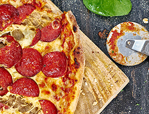
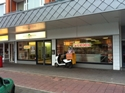
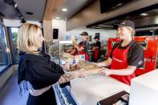
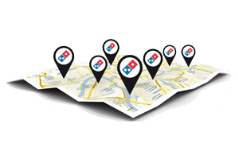

Welkom bij Anonymous Pizza
-
Onze pizza's
bekijk hier de menu. Je krijgt hier een overzicht van pizza's op ons menu.
Bekijk de menu -
Vestigingen
Bekijk hier de openingstijden van iedere vestiging en de telefoonnummers
Bekijk de vestigingen
Over Anonymous Pizza
-
Online pizza bestellen
Online pizza bestellen is altijd een handige optie als je geen tijd of zin hebt om zelf te koken! Je kunt bij anonymous altijd een heerlijk verse pizza bestellen! Anonymous Pizza streeft er naar om alle pizza’s binnen 30 minuten te bezorgen! Online pizza bestellen heeft een aantal voordelen waaronder gratis online betalen en het volgen van je bestelling via PizzaTracker.
-
Pizza bezorgen of afhalen
Wil je pizza laten BEZORGEN of afhalen? Pizza bezorgen kan gemakkelijk door te bestellen via WWW.ANOMIMOUSPIZZA.NL. Maar ook als je pizza wilt afhalen, kun je een online bestelling plaatsen. Zo kun je rustig je pizza selecteren en eventueel een bijgerecht of drankje toevoegen.